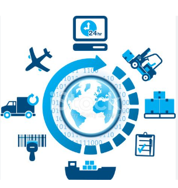

Procurement, logística, inventário e warehouse.

Bem-vindos ao SynthxConnect! Oferecemos soluções integradas para empresas e/ou particulares em várias áreas de negócios. Nosso foco é desenvolver e implementar com eficiência operacional e atender as necessidades específicas.
Para garantir a conformidade, transparência e eficácia na procura de mercadorias.
Para garantir o fluxo eficiente de mercadorias.
Para otimizar o controle e reduzir os riscos
Para melhorar a organização e eficiência no armazém.
Ajudar no crescimento empresarial e adaptação às demandas do mercado, com soluções escaláveis e personalizadas.
Transformar desafios em soluções. Entre em contato conosco e descubra como podemos ajudá-lo!